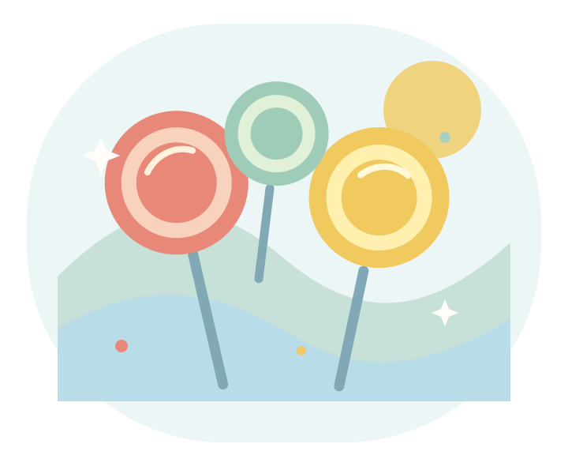

讓選擇有趣
留意造型與色彩，讓每一支糖都有自己的可愛模樣。
A STORY WITH A SWEET SIDE
喜歡糖果，也喜歡把簡單的小事變得可愛。
A LITTLE IDEA
Lollipop 的示範故事，從對棒棒糖造型與色彩的喜愛出發。我們想整理各種可愛的糖果樣式與口味，讓挑選棒棒糖也成為日常裡輕鬆愉快的一刻。
這段品牌故事為示範文案，實際成立背景與經歷待品牌資料確認後補上。

OUR SWEET PRINCIPLES
留意造型與色彩，讓每一支糖都有自己的可愛模樣。
整理不同口味的特色，實際品項與成分資訊以提供資料為準。
讓棒棒糖成為分享快樂、問候朋友的簡單方式。
COLORS, SHAPES & JOY
圓形、星星或水果造型，搭配明亮色彩，讓棒棒糖有各種可愛的樣子。之後可在此放上實際商品與陳列環境照片，並介紹品項特色。
目前使用本地示意插畫；實際商品、照片與口味資訊待提供。
聯絡我們